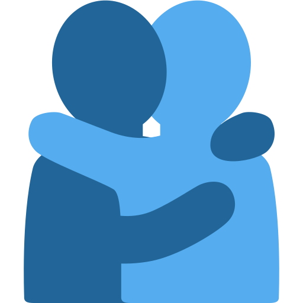
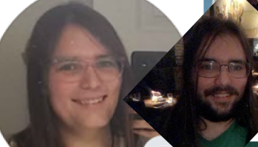

I'm currently in a hospital room with my mom, waiting to see about the results on her colonoscopy.
There's a lot I kinda wanna record that's happened.
Instead of trying to gather my thoughts and write something cohesive I'm just gonna record the relevant discord chats, because I like doing that.
Just found out my mom has a mass in her colon. Shes getting a colonoscopy on the 29th which is the day after I already had planned to visit her
Jackjeeze. That's super scary, how large is it? I had pre cancerous polyps that they excised from my body early, so I understand how scary this is. I really hope everythings alright
oh wait how did they find it without a colonoscopy
Charlotte-MarieNo idea
Jackim not a doctor im just asking to give you as much info as i have to give about this
hey, no one knows whats happening yet so try not to freak out about your mom
we know more than anyone that you have to wait for doctors and tests
Charlotte-MarieThank you
Im honestly really scared
Not in an actively anxious way
But just yknow
Thanks for the reassurance
And caring
JackIt's completely understandable to be afraid, but there's all sorts of bullshit that can be not cancer, I've had some of them. And even in the case that it is, there's always hope it's being detected early.
I'm here for you no matter what happens with this

Charlotte-MarieThere was something else I wanted to tell you though I still feel kinda out of it now but im gonna bring it up anyway
I broke up with Kristian and Rose today. Am strictly considering my relationship with them as being familial in nature.
If I wasn't mostly dissasociated from mom news I'd be able to contextualize why better probably
JackI see! When you're feeling better, tell me more. Ty for keeping me in the loop of your life
Charlotte-Marieofc
Rose is happy about it and Kristian is mostly indifferent to the change is the vibes. Relationship restructuing, spiritually identifying the truth of my feelings type thing
I love both of them very deeply, but there hasn't honestly been a whole lot of sexual chemistry or overtly romantic draw with me and Rose for a long while now.
Kris is more complicated but I still wish to pull back for the moment.
Familial but with more physical intimacy, like I still wanna cuddle both of em and kiss em (chaste). But wanna get my own bed, and don't really want to have sex with either of them to be honest.
I'd have more and better words but it hard
Still I wanna talk about it in spite of my headspace, something to do, and I am still ultimately excited about the change
Jacknods nods im happy you're finding what you want more and more!!
Charlotte-MarieI told Kris theres a world where he wins me back but he has to actually make me feel like hes truly romantically invested in me and successfully charm me and pull me into his magnetism.
Yknow if we're gonna have a romantic relationship I want it to be romantic
Otherwise he has been little brother zoned
He was actually more upset at the prospect of not sleeping with me anymore then he was at not having sex anymore.
Jackthats a good sign (?)
but yes, this. Romance is a process and a choice and when those choices arent being made it kills those feelings
I've been thinking about this too with me and connor (we are still like in love in that way) but being more active and like, what's the word
intentional! Being intentional. This is what we're missing
Charlotte-MarieMhm mhm
I'm glad yall have also been explorin intentionality in relationship stuff
Charlotte-MarieI feel like I've finally become capable of identifying the parts of my shape that I take as a result of pure self expression and the parts of my shape that have taken place due to a combination of inertia/convenience/a desire to explore/the past holding onto a shape type stuff.
It's what helped me realise I really honestly dont have very strong romantic feelings towards Rose.
With Kristian I do honestly hold some romantic feelings but like. He doesn't really. Do romance.
...like it kinda feels like Kristian is more homoromantic in some ways? Like he likes trans women because they were male socialized and this brings Kristian comfort and increased attraction compared to cis women. But I think he also still likes being able to engage in heteronormative sex stuff, which is why trans women are still preferred to men. Though I think he'd still fuck men tbh. Like he'd probably fuck Sam or Cameron if they were down for it.
But anyway I'm intentionally distancing myself from BOTH the parts of myself that exist due to male socialization and no longer enjoy being objectified due to being a woman, which leaves very little room for romance or sexual attraction to persist in the shape of my relationship with Kristian given the nature of his attraction and desires.
Jackthis makes sense to me
You wish to be, in every way, engaged with no differently than a cis woman (?) is the vibe and he cant provide that atm
Charlotte-Marieyeah
And this is okay
Jackindeed bitches be different sometimes
You wish to be, in every way, engaged with no differently than a cis woman (?) is the vibe and he cant provide that atm
no differently than a cis woman*
*given that my partner is interested in ME, THE PERSON and not like, my body or whatever
Jackright no differently than a cis woman who isnt dating a monster
the 1/100 dice roll
disco Elysium dice roll sound affect
Charlotte-Mariefor real
men are fucking raised to be monsters in this society
JackY E A H
outside of kristian are you interested in any men people
ik you're very lesbian core
Charlotte-MarieYes, I've actually been
like
exploring that lately
It's part of this whole process
Jackthis makes sense this makes sense
Charlotte-MarieIdk I think I'm just actually
aware of what romance even is in a way I haven't been until very recently
And I think its cause like, I didn't really truly directly interface with my core being strongly enough until recently
I described it to Rose yesterday that in some ways I feel like my egg hadn't truly hatched until now
Like me changing my name has been part of a process of another layer being broken through, me realising that my core self has been out of touch with my lived experience
its all very multilayered and difficult to explain because theres so much involved
Jacktransition TWO times to move from caterpillar to butterfly
I get it though for some reason now is a time of change
Charlotte-MarieIt really is!
Its the change times
aware of what romance even is in a way I haven't been until very recently
I'm suddenly invested in playing the game in a way i just wasn't even aware really existed before now
I honestly think that due to a combination of being a neglected only child and a creepy otaku that learned about relationship feelings through god damn galge/dating sims I like
(and also living in Society™)
I just like
assumed that deep/strong feelings of love were automatically relationship worthy
I really truly have loved Kristian from the bottom of my heart for a very long time, but this does not automatically romance make
Jacki think that's very common, esp when your'e young. Nothing talks about mature love, everythings standardized and packaged for consumption. You only learn about love, unless you see it from your parents and they explain it to you, as some omniscient force that bends you to it
Charlotte-MarieIts like Society™ trains us, men especially, to treat "love" as this sacred fucking thing only reserved for one person? And also that same person HAS to be the one that you also fuck? And you can only fuck them exclusively as well?
????
?!?!?!??!?
Jackim so tired
Love is ownership they say
and not a tool to force your conformity. not a way to limit thought. we wouldnt do that
Charlotte-MarieAnd I still thought all these things were true in some shape or form when transitioning intiailly
I had deconstructed fucking NOTHING
Jackclassic
i must be a girl (or boy, or what have you) and that is all i will focus on actually
too busy trying to escape the endless pit of despair
Charlotte-MarieI feel a little foolish to admit this, but like
Playing Our Life is what helped crack the rest of my egg
Because it like
provided a setting and context
Jackthats awesome
Charlotte-Mariefor me to explore being myself
without any of the bullshit to get in the way
Jackyes girl develop ego! fuck yeah
sigmund freud in a croptop cheering you on
I'm really proud of you btw :) this is a a tough battle, learning the self consciously. Most people have this without any effort, which is good for its effortlessness-ness, but also creates tons of people who never ever self reflect. You have the joy of learning and knowing actively :) Keep learning the you I will ALWAYS cheer for that
Charlotte-MarieYour words bring me warmth and joy and pride
Thanku for always being such a good friend
Rose I'm feeling particularly awful right now.
Roseoh no
what's wrong?
Charlotte-MarieI just don't understand. Why was I born a girl and also not a girl?
Something to do with evolution or something i guess.
Roseah, yeah
Charlotte-MarieI feel wrong.
RoseI do too
Charlotte-MarieI feel like I don't know how to be me.
Roseone foot in front of the other is what I tell myself
I feel like I know how to be me much more than I ever did
still got a long way to go though
probably not gonna be all the way there until like my mid to late thirties if I spend as much time unraveling as I did suppressing
if they're 1:1
do you feel like you don't know how to be you at all?
Charlotte-MarieI don't know
Rose:<
lays my big fat head on ur lap
Charlotte-MarieI wish I could start over
RoseI know you do
I wish that sometimes too
think back to when I was a child
Charlotte-MarieI'm all wrong
I'm all wrong and I don't like it
RoseI think you are not alone in this feeling
even some cis people probably feel this way
it comes with being traumatized
which you are
being traumatized comes with being transgender
Charlotte-MarieIm scared of people Rose
people make me go in the box, its like an automatic process
RoseI hear you I really do
anything else is a constant battle
Charlotte-MarieI'm even scared of Emi
Roseare you scared of me?
Charlotte-MarieNo
You're like
the least scary person
I'm scarier than you
idk how to explain what I mean by that
Rosetrue X3
Charlotte-MarieI would be more likely to misunderstand or unintetionally coerce myself than you would
which is part of the scary I think is the capacity for that
Rosemhm mhm
thank you for being brave
Charlotte-MarieAm I being brave?
Roseevery day Charlotte
every day
Charlotte-Mariewaaaah
you're making me cry
RoseI'm so proud of you
I'm not ready to be a 30 year old woman
I didn't even get to be a girl properly
is crying in real life
Roseawh
would you like me to mourn this with you
Charlotte-Marienods
Roseyou wanna do something for it some time?
Charlotte-Marienods again
Roseok
I'm gonna FIND that studio or wherever where you did dance as a kid
and I'll bring flowers
and we can cry about it
Charlotte-MarieWhat the hell
that's so
I'm like really actually bawling now
RoseI love you
I went on facebook for no real reason and I was afflicted with an image of pre-transition me, but also these two images are fascinating to compare side by side for some reason for me and I wanted to sahre

Rosewoa
what a transformation
Charlotte-MarieRight?
And yet also its still so obviously me
Rosefrfr
they make me smile
Charlotte-MarieI'm not used to looking at past me and seeing her yknow what I mean?
This is probably a good sign
Rose:)
I love you
Charlotte-MarieI love you.
I wish I felt more comfortable in my skin.
Man you can really tell I didn't break through my egg until now
Rose Roseme too ong
Charlotte-MarieIt's like I didn't really experience the full intensity of my dysphoria and pain until now
Rose Charlotte-MarieI just went "This won't be a problem anymore because I'm A GIRL NOW. IM A GIRL NOW SHUT UP
Rosethat's probably a good sign of growth
Charlotte-MarieYou were a girl the whole time you stupid bitch!!!
You were a girl the whole time you stupid bitch!!!
Charlotte-MarieRight??!
How fucked up is that?
JackTime is a thief but sometimes, if you’re lucky, it’s a teacher
Charlotte-MarieI'm personally feelin that it's more of a theif overall, but sure I mean, I guess thanks for the lesson, asshole
JackYou’re learning things about yourself forever and ever!! Fucked up but awesome it happened :)
Cronos I have a gun
Charlotte-MarieIt just sucks
It sucks that I entered dance at age fucking 3
was told I was different for being a boy, had to do all the boy things, and was rewarded for conforming to those expectations through constant praise at my mere existence as a boy dancer
It's like I never really was there. It felt that way at the time too, I remember it. I was like a robot. I didn't let myself enjoy dancing because moving too much in certain ways would make me look like a girl which I wasn't allowed to be.
Rose told me that I should consider all this trauma
which has helped me a little
idk
JackUnfortunately this isn’t uncommon experientially. Everyone claps when a boy does anything besides be a girl. I can imagine how traumatic that would be for a little trans girl. A good “boy”friend is a man who doesn’t beat you. Bars on the floor, keeps men and not-men complicit. Keeps them threatened, afraid of change, afraid of everything.
The things that are done to a trans person, even “positive”, that harm them are… harm. You’ve experienced harm. When I was praised for wearing makeup and heels, and when I was condemned for playing in the mud, that’s trauma baby. Woo!!
Charlotte-MarieI wish I had failed more. Idk how to explain what I mean. I wish I had learned the value of failing as a result of genuine self expression. Or of suceeding at something I originally was bad at.
I feel like I was never meaningfully challenged like at all except in ways that didn't fucking matter
It's so frustrating, its so frustrating that we live ina world where all the adults are so stupid and hurt their children because they were hurt I'm just so
I'm so angry about it all
It's really intense in a way thats new to me
JackI’m right there with you. Every time I hear someone excuse their parents or other caregivers full stop rather than holding the horrible weight of “they loved me and they fucked me up” I perish bad style
They loved me and they didn’t learn how to make us both better. They loved me but not enough to save me.
Charlotte-MarieIt's beyond my parents its like all the adults in my life at the time. It's just like, I was raised as a fucking gifted and talented white male, and so I was praised just for existing. Just for conforming to basic expectations I was treated like a prodigy. Like I was fucking Jesus himself come to earth to save us all. I crushed myself inside of that box from such a young fucking age because it was what I was constantly god damn praised for! Just crushing my self expression and existing as an exemplary young white boy, fuck, I hate it, its disgusting, its so fucking gross!
JackI understand, not by sympathy, but by empathy. It is gross! It is horrible! And it isn’t your fault! And infact, infact! Every day that you’re Charlotte-Marie is testament to what you’ve learned and how you have and continue to unlearn! And in fact! Every day you choose not to continue to propagate and rather to combat this sickness is one that the world becomes slightly better!
I hope you can take any solice that you won’t be an unknowing part of this cycle, and that by knowing, you have the opportunity to help others escape it too!
Charlotte-MarieWaaah, I'm crying now.
Thank you.
JackYou’re welcome hun. In the end we’re all victims, but in the end, we choose whether we victimize others.
Good news you’re always choosing to be good and cool and to learn and grow :)
Charlotte-MarieMore and more lately at least.
Thank you for always kindly and attentively listening
JackThat’s part of the learning and growing don’t worry
And of course!
Always here to give any words I got
Charlotte-MarieJack, Giver of Words
JackCan’t always promise they’ll serve cunt but I can always promise I’ll have em
I do be talking
Charlotte-Mariethey usually serve cunt though
Man.
I'm glad that Kristian didn't fumble me while I was high
or there would've been no hope for us
Roselmao
Charlotte-MarieI wish I knew how to describe like
Charlotte-Mariewhat makes for good romance
for me
cause its like
It has to be like
I have to be allowed to be a tsundere about it or its no fun
but its not really like
rapey or anything (even in a playful/kinky way)
It's different
Rosemood
Charlotte-MarieI genuinely like
Roseyou already know though
Charlotte-MarieLike it hurts my dignity to just let Kristian get his way with me, wether that be fucking me or showing me off as his wife or whatever
in a real way
I don't like it
which is what sets up the rest of it so nicely
Cause I do want him to sort of knock me down and take me
Which he did while I was high, but that's cause I'm an open book when I'm high
But like
I'm an open book normally
but not for kristian apparently
Rosenods
Charlotte-Mariehow is this guy so dense
RoseI have no idea
Charlotte-MarieI'm a tsundere with a dense protagonist partner its the worst
I prefer the sadistic partners
Rose Charlotte-Marie:(
That gif is mean
Rosesorry sorry
Charlotte-Mariemean gif :(
Roseis this one less mean
Charlotte-MarieThat's also mean but it makes me feel less bad
Maybe the pointing makes it feel worse
Rosenods
I'm p sure I like being tsundere as well but only with men
maybe also with women but not always
Charlotte-MarieWe are the same in this regard
RoseI feel like with men it is always
ye
Charlotte-MarieIt's like, men suck why would I even want to be with a man in the first place, ew.
looks back over my shoulder at a man while biting my lip for a split second
Sorry to those who don't have a Forbidden Archives key, too much of my explorations were a litlle too personal to leave unlocked.
It should suffice to say that I temporarily experimented with breaking up my relationships and distancing myself from things that I took for granted about myself.
Since then I've started putting the pieces back together though.